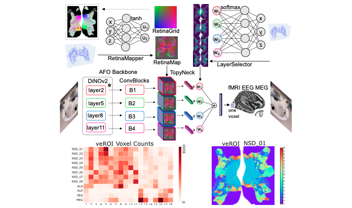
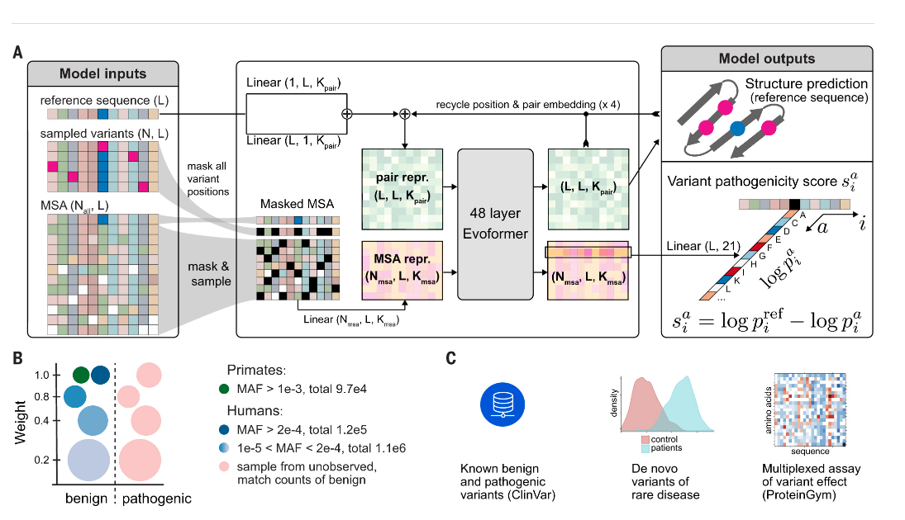
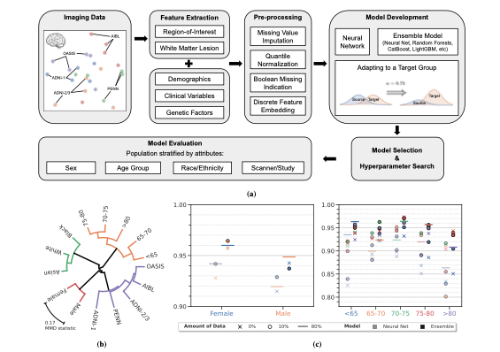
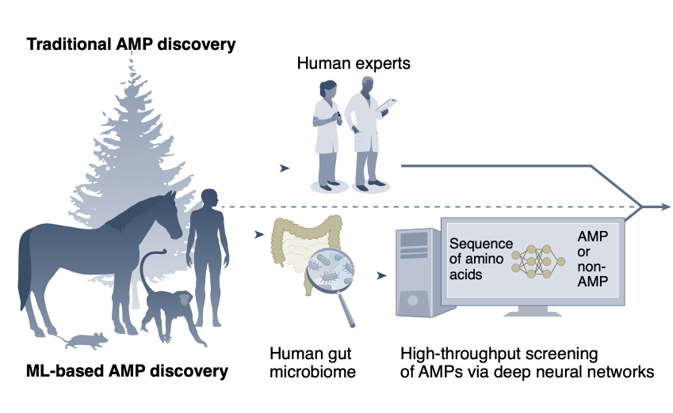
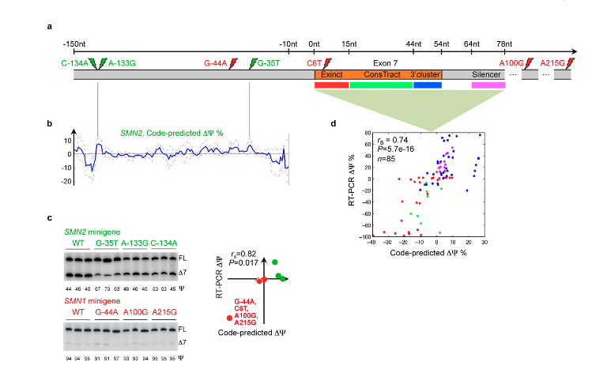
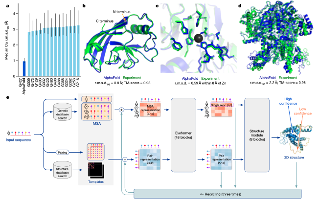
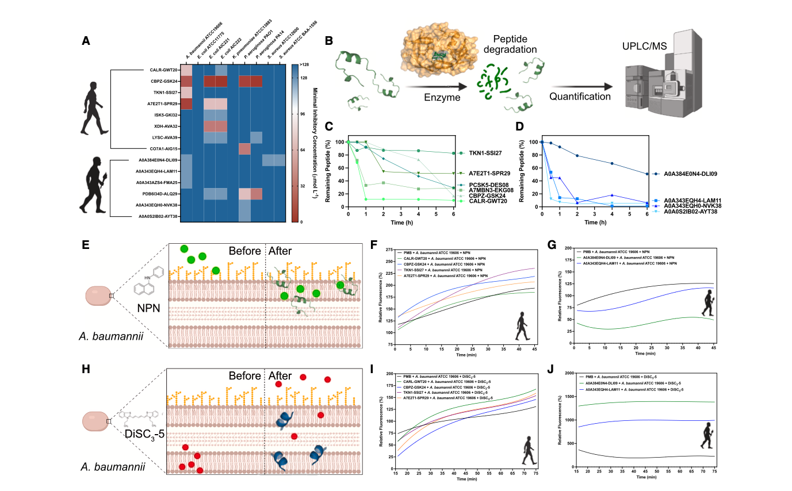

Computational Biology papers From various labs (mostly) at Penn combining ML and Biology The BioPerl Toolkit for Life Sciences  Retinotopy-Inspired Brain Model Encoding RNA Splicing Analysis with Large Datasets  Missense Variant Effect Prediction A Bayesian Model for Splicing-Based Cancers  Diagnostic Models for New Populations  Antibiotic Discovery with Machine Learning  Splicing as Determinant of Disease  AlphaFold: Predicting Protein Structure  De-extracting Ancient Peptides